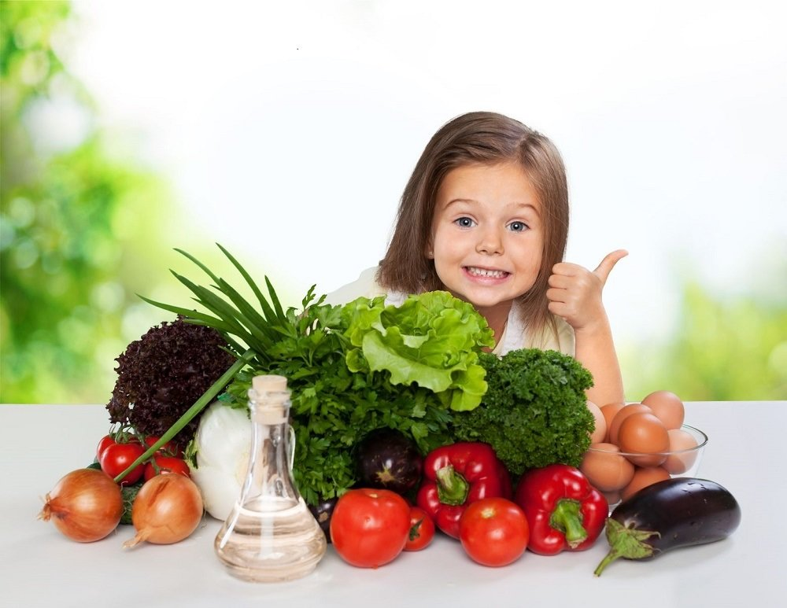

Для детей грудного и раннего возраста
Оптимальное питание на протяжение первых двух лет жизни способствует здоровому росту ребенка и улучшает его когнитивное развитие. Оно также снижает риск набора избыточного веса и ожирения и развития НИЗ позднее в жизни.
Рекомендации по здоровому питанию для грудных детей и детей других возрастных групп схожи с рекомендациями для взрослых, но важны также следующие компоненты:
- В течение первых 6 месяцев жизни дети должны находиться на исключительном грудном вскармливании.
- Грудное вскармливание детей необходимо продолжать в течение первых двух лет жизни и позднее.
- С шестимесячного возраста грудное молоко необходимо дополнять разнообразными надлежащими безопасными и питательными продуктами. В прикорм не следует добавлять соль и сахар.
